[上一章]
本篇教程将基于一个易语言程序“扫雷”小游戏，用火山视窗将其进行重写，以学习如何从易语言转移到火山视窗。
易语言例程：点击下载。
首先打开易语言例程，对程序进行简单分析，其内容分别如下：
(1) 1个窗口和1个窗口程序集
移植到火山时，定义1个主窗口类即可。
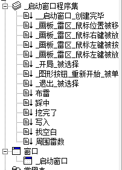
(2) 图片资源表
移植到火山时，可以直接在主窗口类中直接定义成员常量解决。
点击“文件->新建->项目”菜单，创建一个MFC窗口程序。
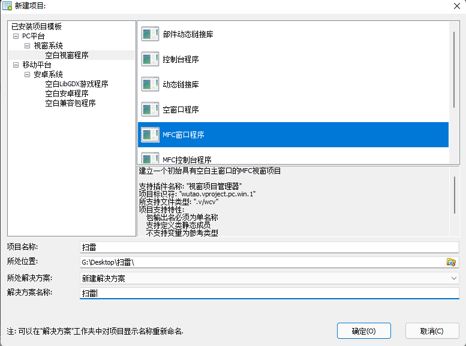
创建后注意标题属性问题，其默认位于窗口变量中。
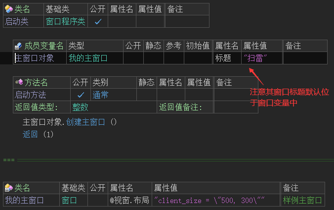
4.1 界面设计
易语言界面分析：
在当前窗口中使用了以下组件：
(1) 菜单
(2) 标签
(3) 图形按钮
(4) 画板
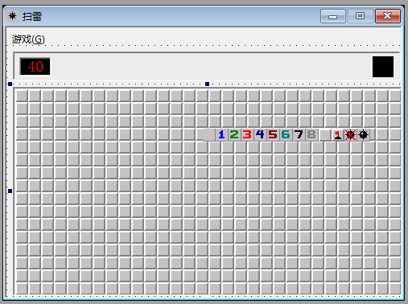
移植到火山步骤如下：
(1) 将易语言中的画板底图导出备用，右键底图选择“写到文件”。
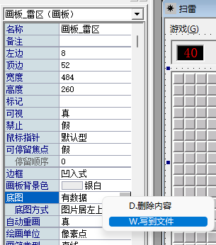
(2) 同时将图形按钮的图标导出，依次右键选择“写到文件”即可。
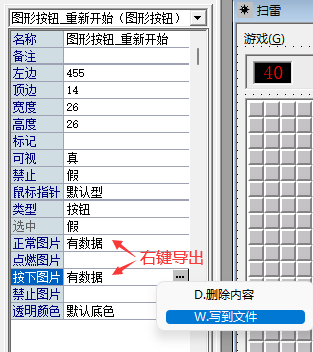
(3) 打开火山视窗设计器，将易语言界面在火山中复现出来。
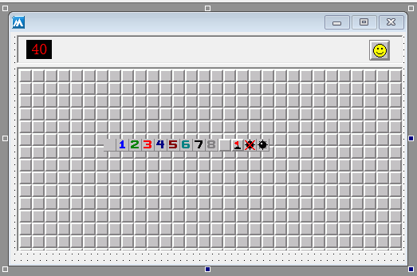
4.2 菜单设计
易语言菜单设计：
在易语言中需要右键窗口设计器选择“菜单编辑器”。
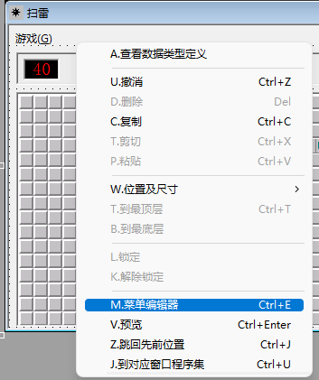
其界面效果如下：
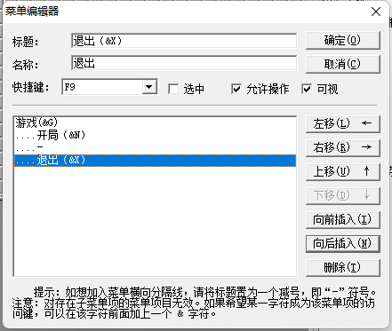
火山视窗菜单设计：
在火山中需要新建一个基础类为“菜单类”的类，通过右键选择“打开菜单设计器”。
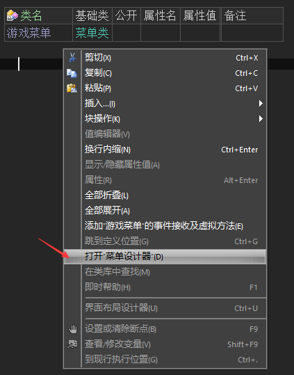
其界面效果如下，使用方式基本和易语言一致：
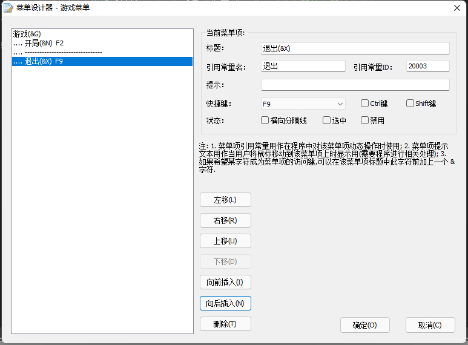
火山视窗菜单显示：
添加主窗口创建完毕事件，调用“置菜单()”方法就可以将菜单设置到窗口上。
最终效果如下：
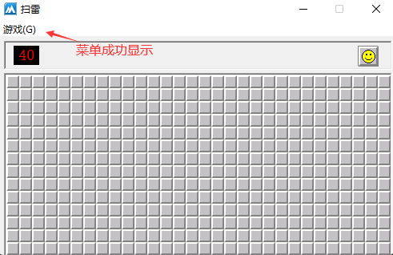
易语言资源导出：
双击要导出的图片，点击“输出到文件”即可导出。
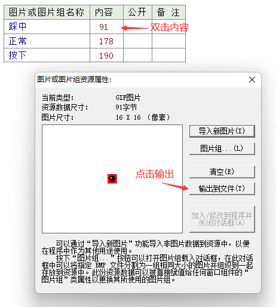
火山视窗图片资源引用：
在主窗口中定义三个成员常量，类型提供“位图资源”后就可以通过“初始值”引用图片。
易语言代码如下：
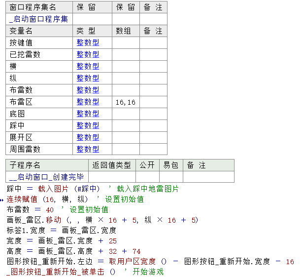
移植到火山视窗后注意事项如下：
(1) 初始值可以直接在表格中设置，无需使用代码赋值。
(2) 火山中使用“位图对象类.载入位图资源()”方法来载入图片。
(3) 开始游戏可以额外新建一个方法来代替易语言中的“图形按钮被单击”。
(4) 火山中二维数组需要使用整数[16][16]代替。
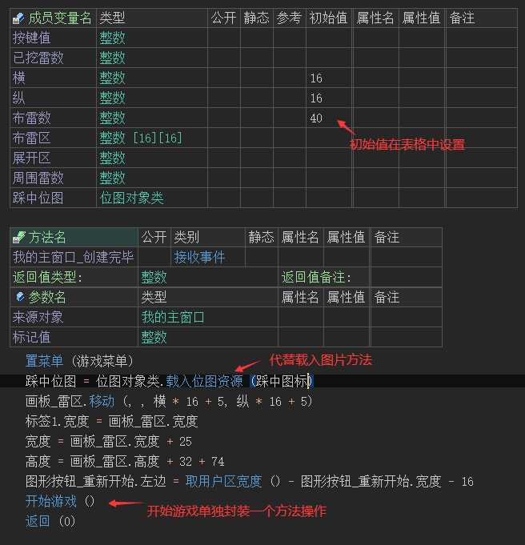
易语言代码如下：
移植到火山视窗后，注意事项如下：
(1) 建立一个“开始游戏”方法，将代码移植到此方法中。
(2) 火山视窗中暂无重定义数组方法，需要单独封装，利用“计次循环”实现重定义数组功能。
(3) 在“图形按钮_被单击”事件下直接调用封装好的“开始游戏”方法即可。
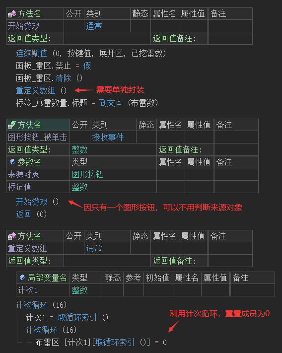
易语言代码如下：
移植到火山视窗流程如下：
(1) 添加主窗口“接收到命令”事件。
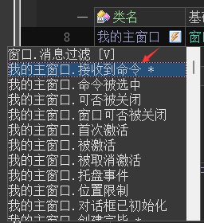
(2) 通过判断“命令代码”参数来确认是哪个菜单单击。
(4) 易语言中的“销毁()”方法在火山视窗中使用“关闭窗口()”代替。
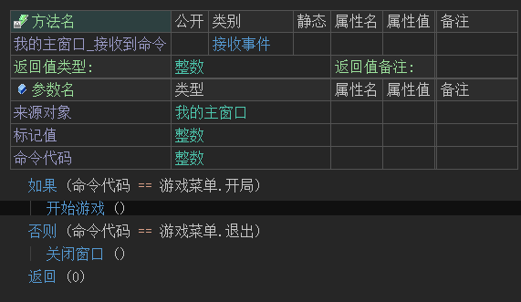
易语言代码如下：
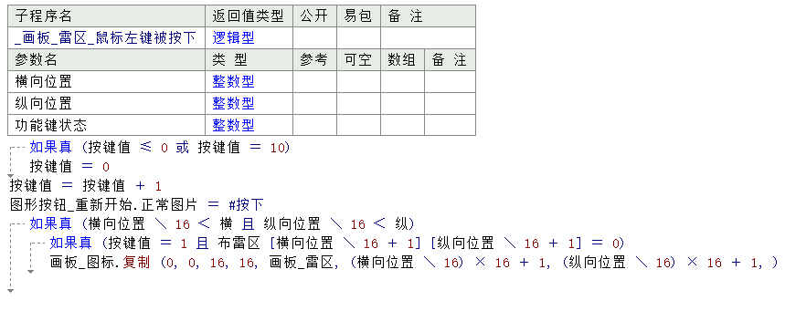
移植到火山视窗时注意事项如下：
(1) 易语言中的整除使用除法运算符代替即可。
(2) 火山中的“且”需要使用“&&”代替。
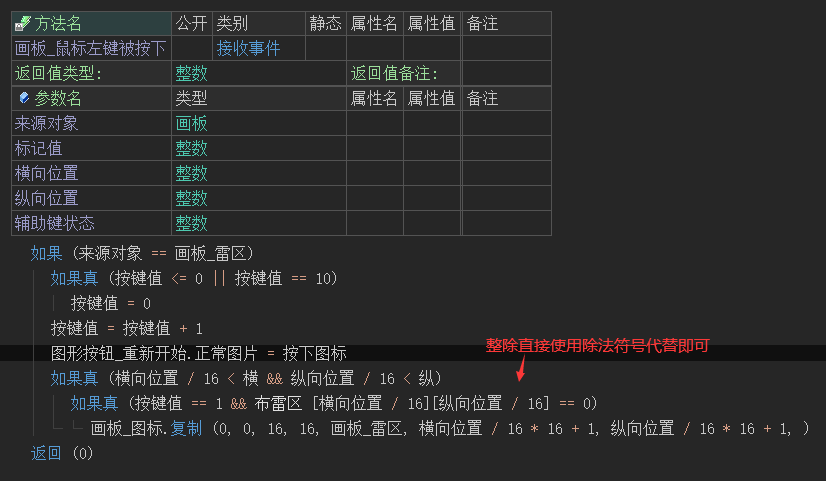
易语言代码如下：
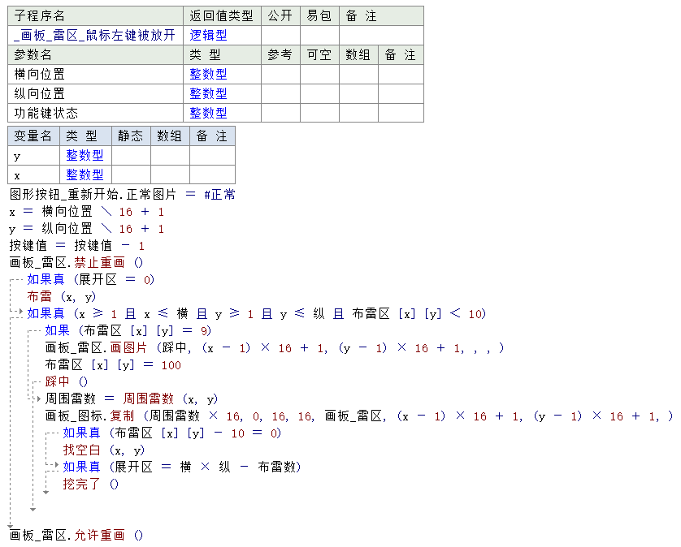
移植到火山视窗时注意事项如下：
(1) 因火山数组是从0开始，在x、y位置进行计算时不需要+1，否则影响后续的数组操作。
(2) 判断雷区时，也需要稍作修改：
将：如果真 (x ≥ 1 且 x ≤ 横 且 y ≥ 1 且 y ≤ 纵 且 布雷区 [x] [y] ＜ 10)
修改成：如果真 (x >= 0 && x < 横 && y >= 0 && y < 纵 && 布雷区 [x][y] < 10)
(3) 同时绘制图标时也不需要进行-1操作，否则位置会发生偏移。
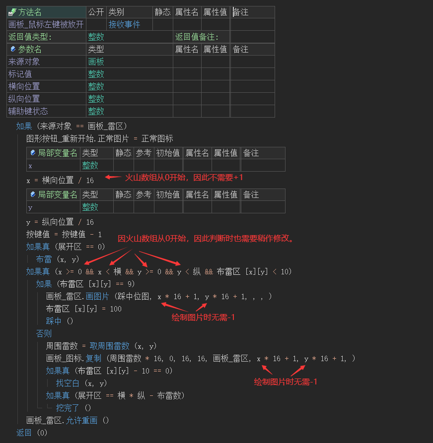
易语言代码如下：
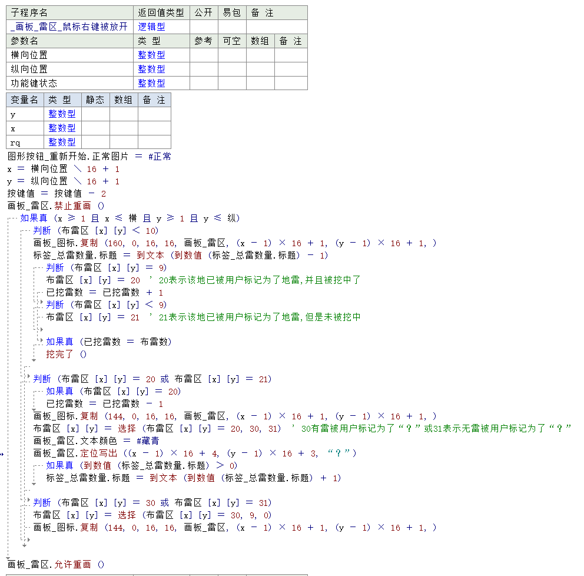
移植到火山视窗时注意事项如下：
(1) 因火山数组是从0开始，在x、y位置进行计算时不需要+1，否则影响后续的数组操作。
(2) 判断雷区时，也需要稍作修改：
将：如果真 (x ≥ 1 且 x ≤ 横 且 y ≥ 1 且 y ≤ 纵)
修改成：如果真 (x >= 0 && x < 横 && y >= 0 && y < 纵)
(3) 同时绘制图标和定位写出文本时也不需要进行-1操作，否则位置会发生偏移。
(4) 易语言的“判断”方法，在火山中使用“如果否则”语句代替即可。
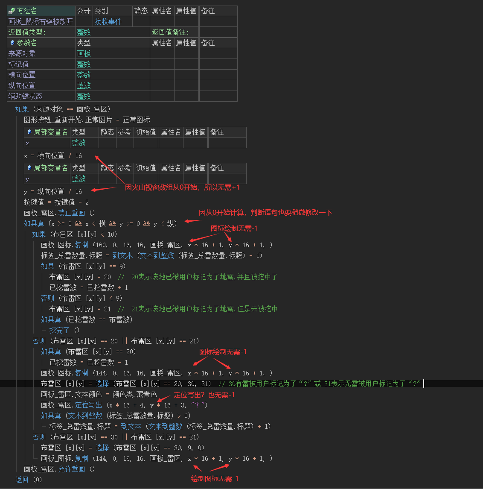
易语言代码如下：
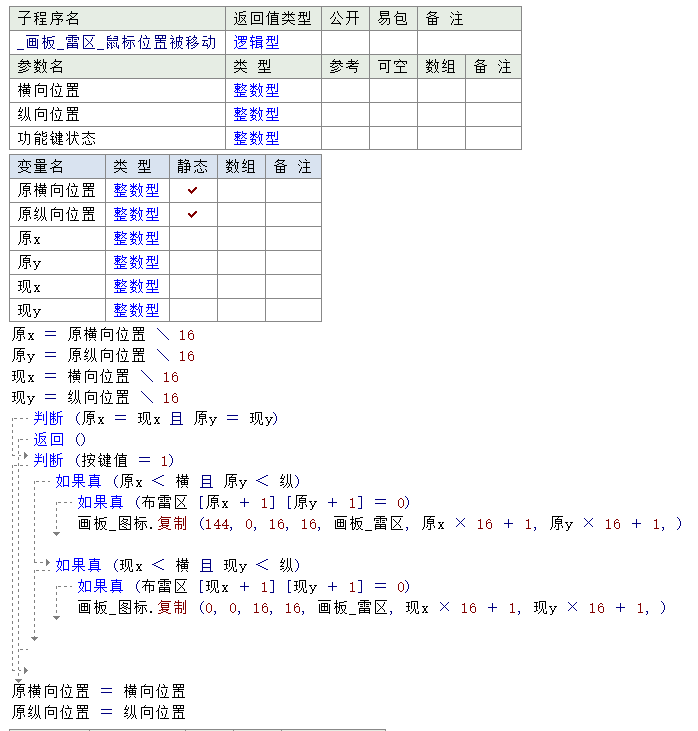
移植到火山视窗时注意事项如下：
(1) 注意运算符问题“＼”使用“/”,“×”使用“*”。
(2) 因火山中数组索引是从0开始，所以访问数组成员时无需+1。
(3) 易语言中“判断”方法，在火山中使用“如果否则”语句代替即可。
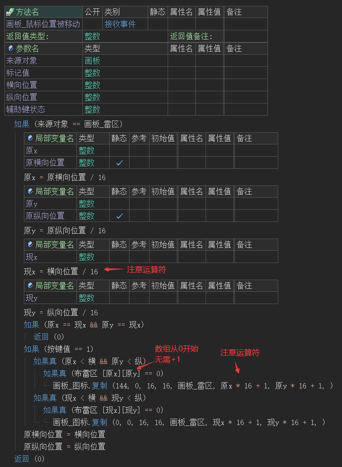
易语言代码如下：
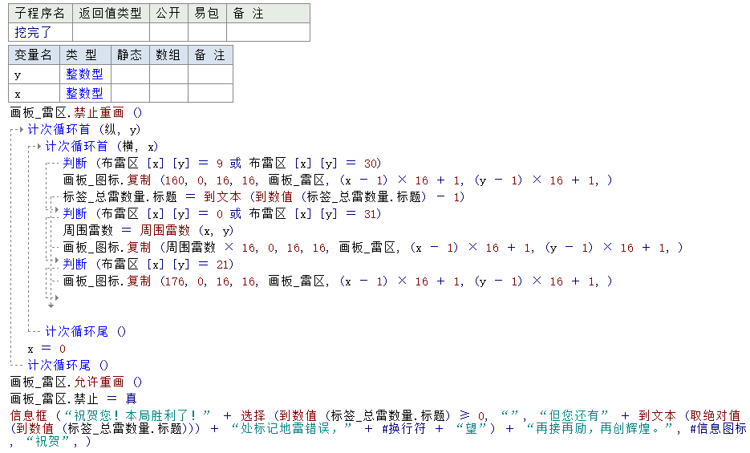
移植到火山视窗时注意事项如下：
(1) 易语言中“计次循环首”在火山中使用“循环”语句代替。
(2) 因火山循环从0开始，所以画板绘制图标时x和y坐标无需-1，否则位置会发生偏移。
(2) 易语言中“判断”方法，在火山中使用“如果否则”语句代替即可。
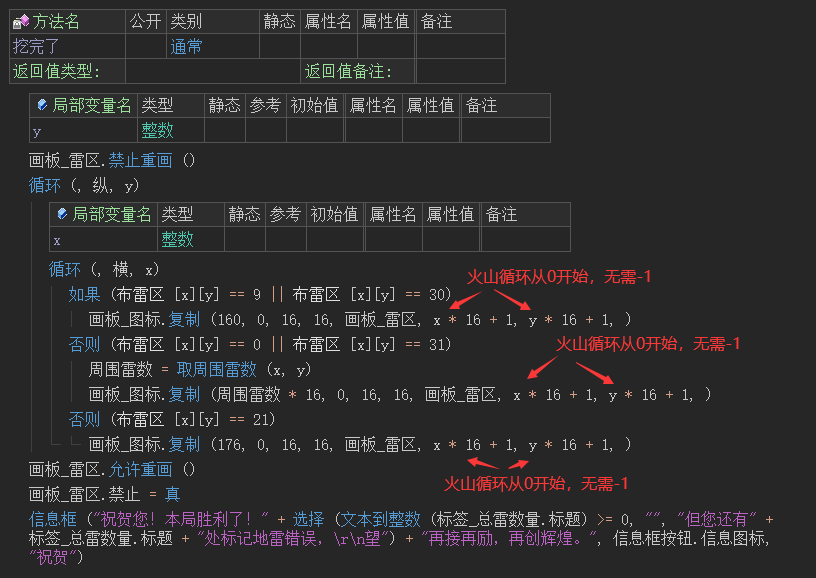
易语言代码如下：
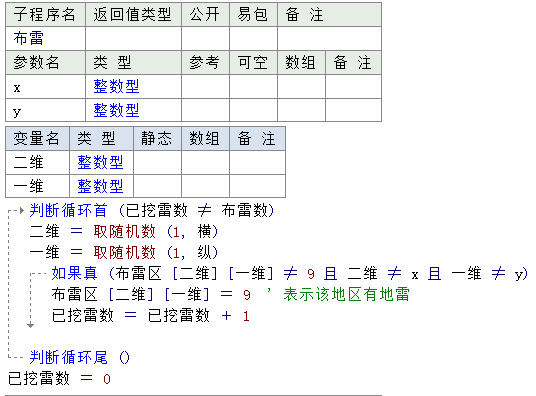
移植到火山视窗时注意事项如下：
(1) 易语言中的“判断循环首”在火山中使用“判断循环”语句。
(2) 因火山数组从0开始，因此在使用“取随机数”方法是，随机数的起始值应从0开始，横纵坐标也均需要-1。
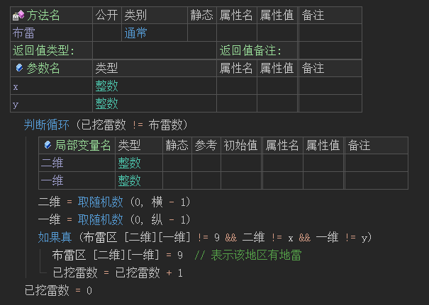
易语言代码如下：
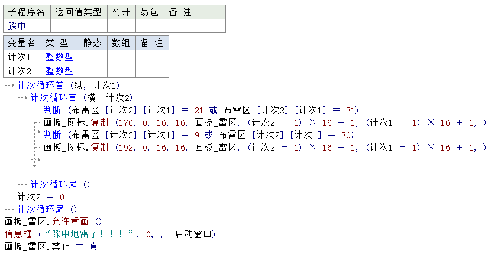
移植到火山视窗时注意事项如下：
(1) 易语言中“计次循环首”使用“循环”语句代替。
(2) 因“计次2”变量定义在第一个循环内部，因此在第二个循环结束时，无需对此变量进行重置。
(3) 因火山循环索引从0开始，因此在画板绘制图标时，无需对计次变量进行-1操作。
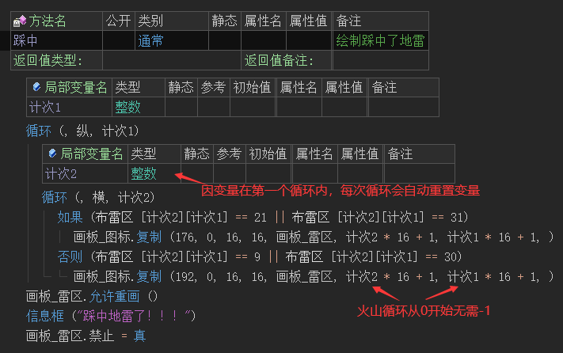
易语言代码如下：
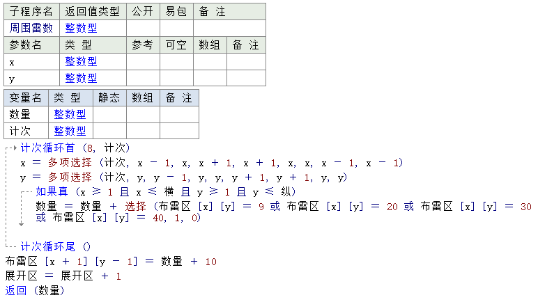
移植到火山视窗时注意事项如下：
(1) 易语言中的“计次循环首”使用“循环”语句代替。
(2) 因数组索引从0开始，判断雷区时也需要从0开始。
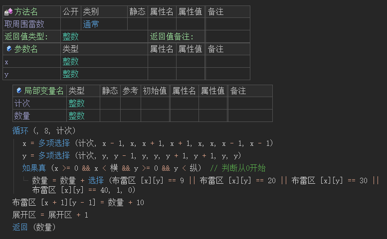
易语言代码如下：
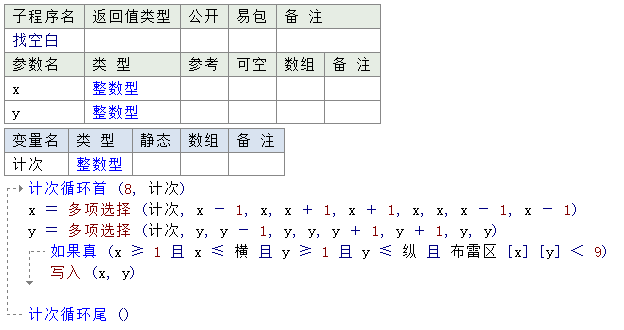
移植到火山视窗时注意事项如下：
(1) 易语言中的“计次循环首”使用“循环”语句代替。
(2) 因数组索引从0开始，判断雷区时也需要从0开始。
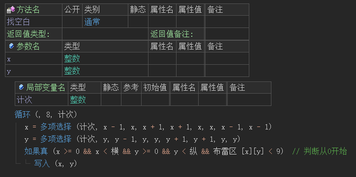
易语言代码如下：
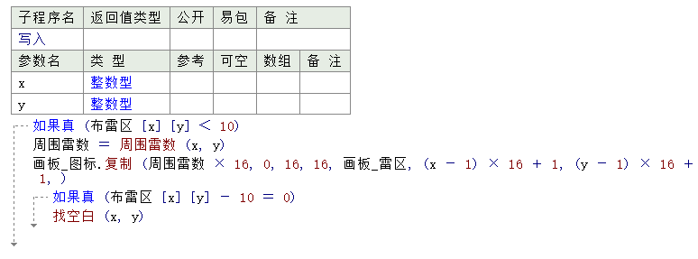
移植到火山视窗时注意事项如下：
因数组索引从0开始，在画板绘制图标时x、y坐标无需进行-1。
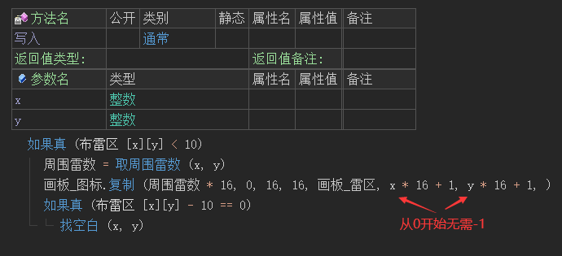
扫雷演示：
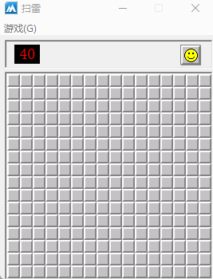
标记演示：
注：点击鼠标右键可以标记地雷。
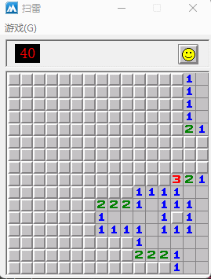
[上一章]